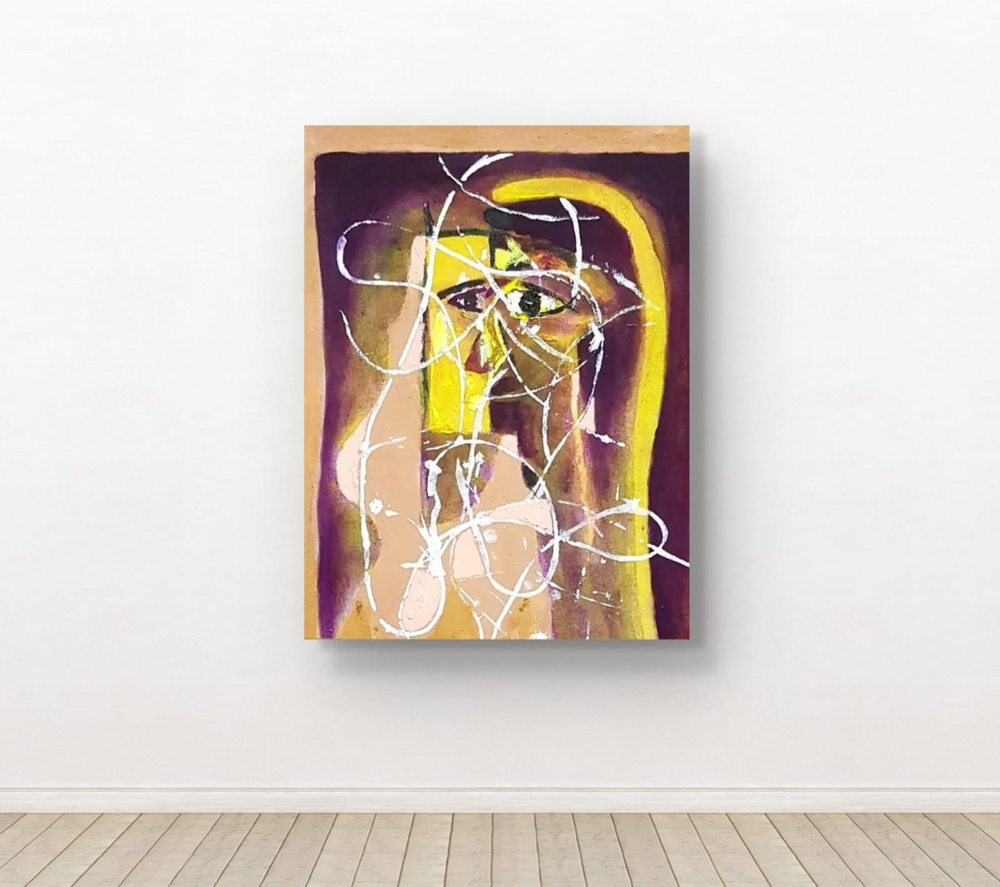
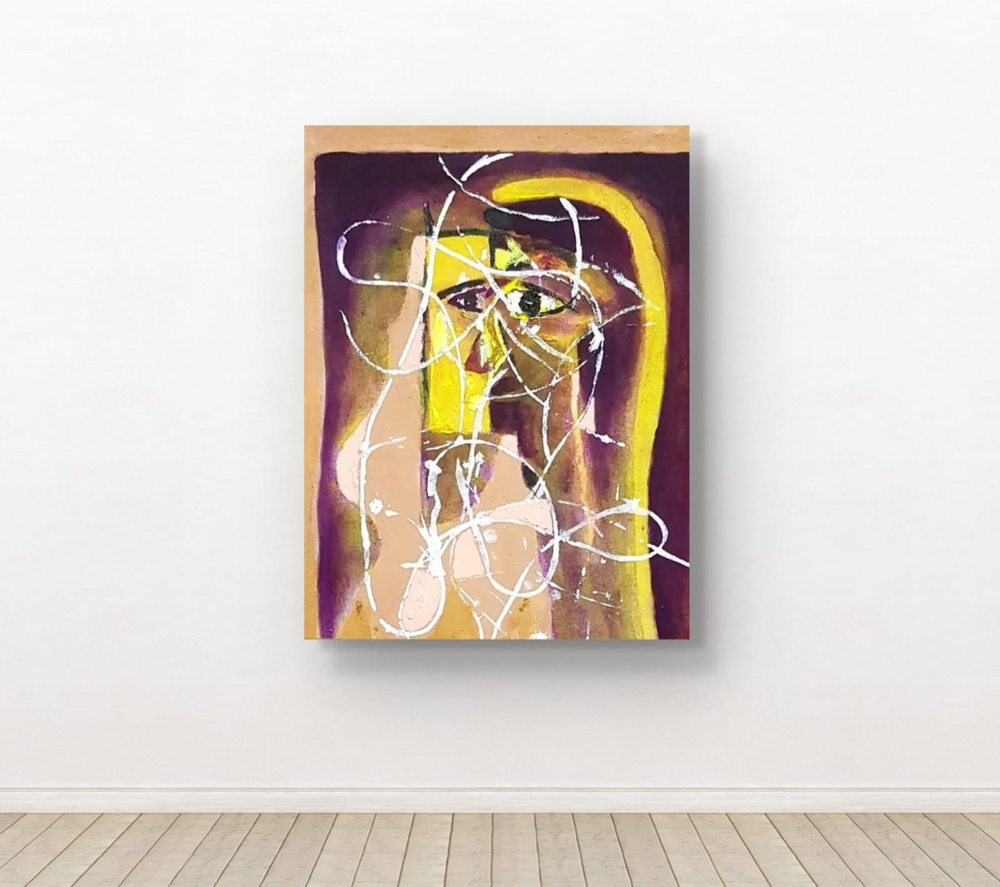
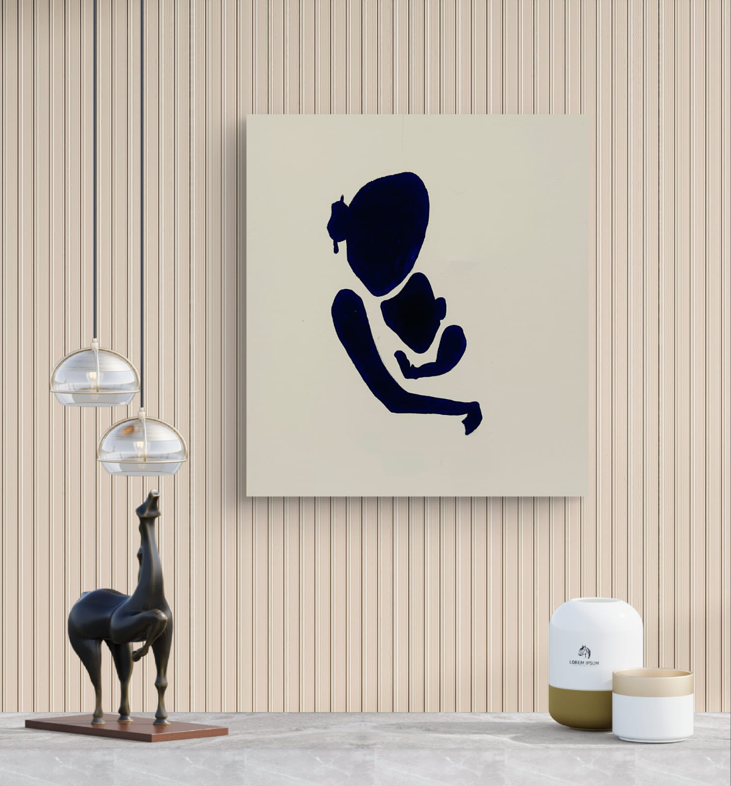
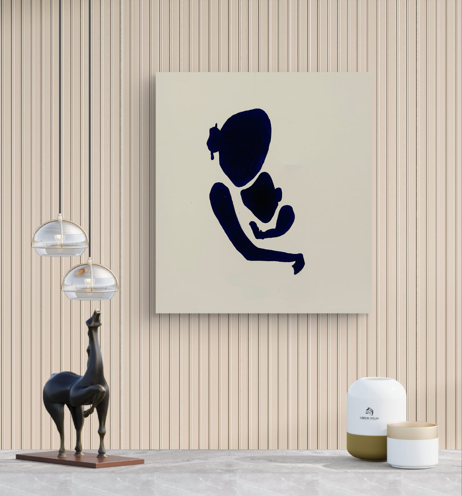

Original impressionistic masterpieces that transform spaces and capture hearts
My paintings are recognized for their impressionistic style. It’s all about the focus, the purpose, the one strong statement. My color palette is limited to single subjects yet they make the vivid colors sing in harmony. Flicks and swishes of brushwork mend the broken passage’s colors, while the figure is the core source of her inspiration. The challenge to capture the surrounding atmosphere, as well as the subject, is a puzzle that keeps drawing me back to its human form.
There are times where I often question myself, why bother? Why do I try? But there’s one thing that keeps me from giving up from putting away my tools and succumbing to the average life of those who don’t partake in something that creates discussion, beauty, or personal satisfaction. This is what we call passion. I consider myself quite passionate, frankly. I wouldn’t call myself a ‘great artist’, rather a being who simply reflects emotions and passion on a simple piece of canvas. There’s a certain relaxation I find in moving the brushes across an empty canvas, where you start from a drop of paint and ideas that form this piece that holds so much depth.
Others frequently ask: “how you do manage to create these paintings?” and I find it funny how being artistic is treated like a certain advanced ability only some are gifted to. In reality, art is something we all were born with, it is subjective and anyone can be an artist. Anyone can create art in any form if they’re willing to put in the effort.
CANVAS by Heart painting collections promotes our culture, aspirations, and environment – by encouraging the pursuit of innovation and changes in concert with progressive’s core values, the CANVAS by heart painting collections presents excellence in artistic achievement under the work stress environment that encourages open-mindedness to what is unfamiliar and different. Wholly committed to creativity and diversity in our corporate community. Art collections as a tool to speak rich dialogue about the ideas and concerns of our time, ultimately inspiring our people to risk, learn, and grow.


 


 
